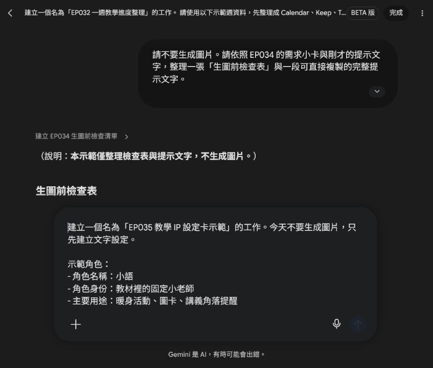
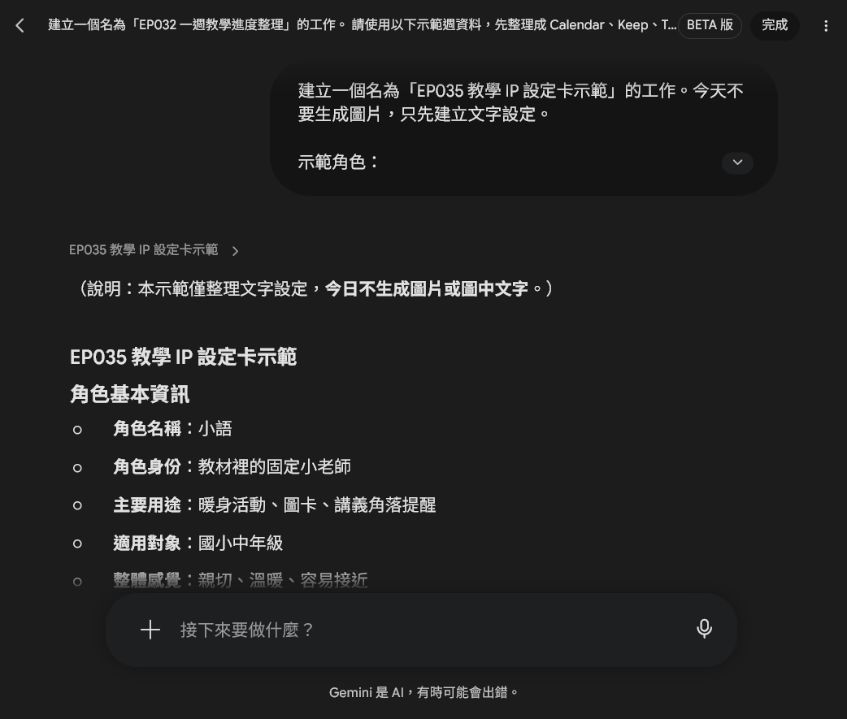
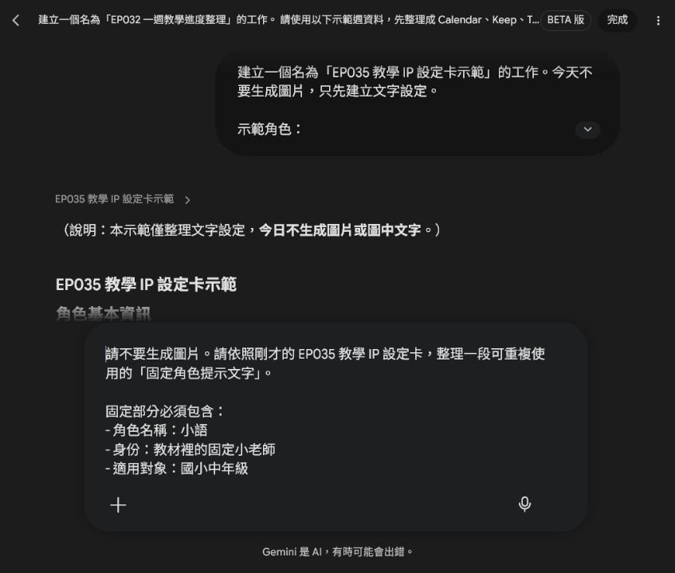
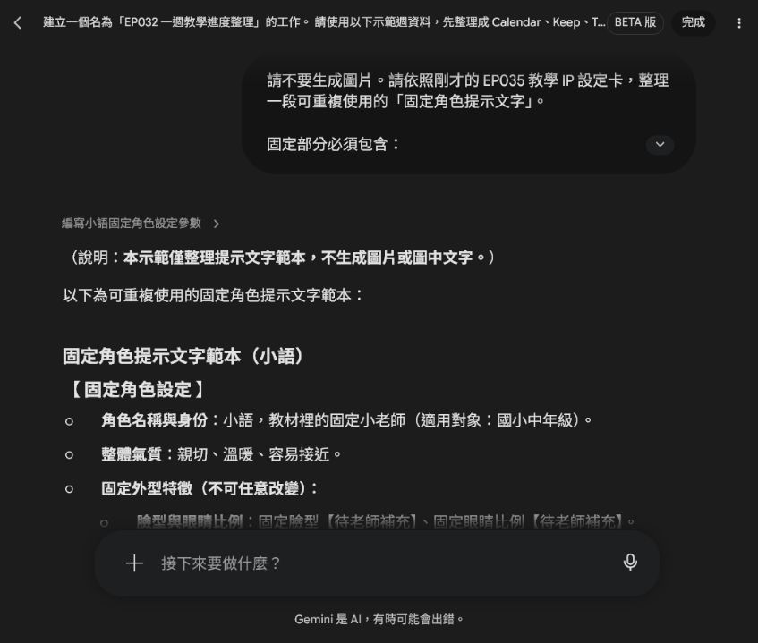
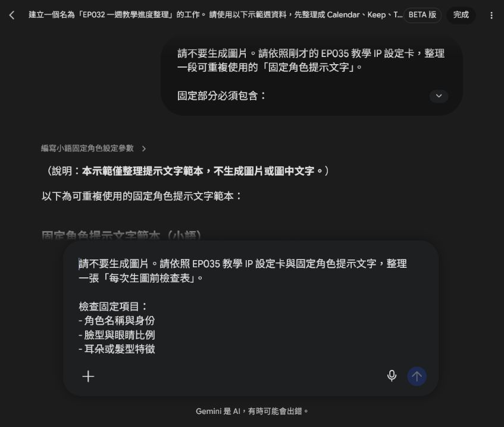
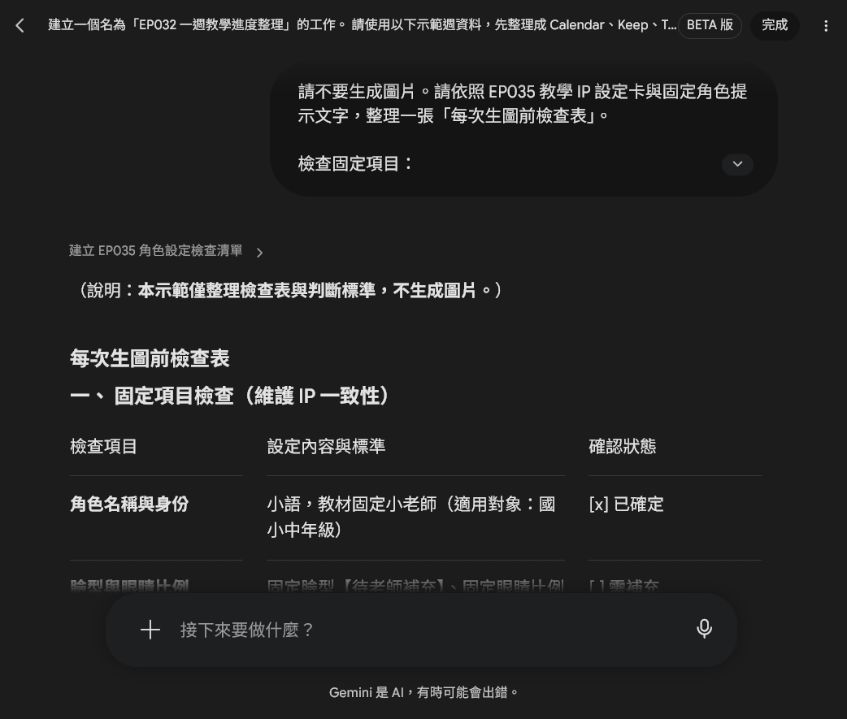

EP035｜先建立自己的教學 IP
今天只做一件事
這一集先不要急著一直生很多圖。
我們先幫自己的教材，建立一個固定的教學 IP。
這個 IP 可以是一位小老師、一隻小動物角色，或是一個固定出現的教材夥伴。重點不是畫得多華麗，而是讓它在不同教材裡，看起來都像同一個角色。
為什麼要先做這一步？
很多老師第一次做角色圖時，今天叫 AI 畫一張，明天再畫一張，結果會發現：
- 臉不一樣
- 毛色不一樣
- 衣服不一樣
- 氣質不一樣
- 明明是同一個角色，學生卻覺得像不同人
這不是 AI 故意畫錯，而是因為你沒有先告訴它：
這個角色哪些地方不能改，哪些地方可以改。
所以這一集，我們先把自己的教學 IP 設定清楚。
今天做完會拿到什麼
今天完成後，你會有三個小成果：
- 一張教學 IP 設定卡
- 一段可重複使用的固定提示文字
- 一張生成後的檢查表
有了這三樣，之後你做教材角色圖會穩很多。
先理解：什麼是教學 IP？
這裡說的「教學 IP」，可以先想成：
會反覆出現在教材裡的固定角色。
它可以是：
- 帶學生進入主題的小老師
- 負責提醒任務的小幫手
- 出現在圖卡、學習單、封面的教材角色
- 讓學生一看到就知道「這是這門課的角色」
所以我們不是只是畫一張可愛圖，而是在建立：
一個可以反覆使用的教材角色系統。
STEP 1｜先決定你的教學 IP 是誰
下面的示範先請 Spark 整理文字設定，不生成圖片。這樣可以先把角色用途說清楚，再決定外型。

先完成這一句：
我要建立一個會固定出現在教材裡的角色，他的用途是＿＿＿＿＿＿。
例如：
- 在課堂一開始帶學生進入主題
- 出現在講義角落提醒任務
- 在圖卡中做示範動作
- 在封面中代表這套教材
今天先不要想太多
先選一個最基本的用途就好。
例如：
這個角色要用來當教材裡的固定小老師。
STEP 2｜先寫角色的基本身分
不要一開始就只想外表。
先寫這個角色的「角色定位」。
你可以先填這幾項：
| 要想的事 | 先寫什麼 |
|---|---|
| 角色名稱 | 先取一個容易記的名字 |
| 角色身份 | 小老師、小幫手、學習夥伴 |
| 主要用途 | 封面、圖卡、講義提醒、暖身活動 |
| 適用對象 | 國小、國中、成人初學者 |
| 整體感覺 | 親切、穩定、溫暖、清楚 |
範例
角色名稱：小語
角色身份：教材裡的固定小老師
主要用途：暖身活動、圖卡、講義角落提醒
適用對象：國小中年級
整體感覺：親切、溫暖、容易接近

STEP 3｜把角色分成「不能改」和「可以改」
這一步最重要。
很多角色會跑掉，就是因為固定特徵和變動特徵混在一起。
教學 IP 設定卡要分兩欄
| 不能改 | 可以改 |
|---|---|
| 臉型、眼睛、耳朵、毛色 / 膚色、固定服裝、整體氣質、身形比例 | 場景、手上教材、姿勢、表情強弱、旁邊教具、動作 |
為什麼要這樣分？
因為如果你每次都連「臉型、服裝、氣質」一起改，AI 就會以為你是在畫新角色。
但如果你只有改：
- 今天在教室
- 明天在操場
- 今天拿圖卡
- 明天指著黑板
那學生看起來還是會知道：
這是同一位教材角色。
STEP 4｜寫出你的教學 IP 設定卡
你可以直接照這個格式填。
教學 IP 設定卡
角色名稱：
角色身份：
這個角色主要做什麼：
適用對象：
整體氣質：
不能改的地方：
可以改的地方：
STEP 5｜如果還沒有正式參考圖，也可以先做文字版
有些老師會想：
「可是我現在還沒有定案圖，怎麼做？」
沒關係。
一開始可以先做文字版設定卡，先把角色寫清楚，再用這張卡去生第一張基準圖。
也就是：
先有設定，再有參考圖。
不是反過來亂畫很多張，再回頭猜哪一張比較像。
STEP 6｜把設定卡整理成固定提示文字
這一段就是你之後每次生圖都可以重複用的核心提示。
可複製提示文字
先把固定特徵寫在提示文字前面，再留下本次場景與動作的填寫位置。這次仍然只整理文字，不直接生成圖片。

請生成一張適合教材使用的角色插圖。
固定角色設定：
這是一個會固定出現在教材中的教學 IP。請保持同一個角色設定，不要改變角色的臉型、眼睛比例、耳朵或髮型特徵、主要配色、身形比例、固定服裝與整體氣質。
角色定位：
這個角色是教材中的固定小老師／學習夥伴，風格親切、清楚、溫暖，適合陪伴學生進行學習活動。
這次場景：
【填入教室、圖書角、走廊、戶外活動等】
這次動作：
【填入拿圖卡、指向教材、帶學生看圖說話、示範任務等】
限制：
- 不要改變角色的固定特徵。
- 不要在圖中生成文字。
- 不要出現真實學生姓名、校名、Logo 或水印。
- 畫面要簡潔，適合放進教材。
- 保留部分留白，方便後續排版。

STEP 7｜生圖時，記得先貼「固定角色」，再貼「本次任務」
初學者最容易犯的錯是：
一開始就只寫這次要做的場景，忘記貼固定角色設定。
比較穩的順序是：
先貼固定內容
- 角色是誰
- 角色長什麼樣
- 哪些不能改
再貼這次變動內容
- 場景在哪裡
- 正在做什麼
- 旁邊有什麼教具
這樣每次換教材主題時，角色還是比較能維持一致。
STEP 8｜生成後怎麼檢查？
在真正生圖前，先做一次固定項目和可變項目的檢查。如果臉型、配色、服裝或文化意義還沒有定案，就先停在【待老師補充】，不要讓 AI 猜。

不要只看「可不可愛」。
要把新圖和你的標準設定卡，或第一張基準圖，放在一起看。
先看這五個地方：
| 看哪裡 | 要注意什麼 |
|---|---|
| 臉 | 看起來是不是同一個角色 |
| 眼睛與表情 | 親切感有沒有保留 |
| 配色 | 有沒有突然換色太多 |
| 服裝 | 固定服裝有沒有被改掉 |
| 比例與氣質 | 頭身比例、感覺是否一致 |
記住一句話
可愛，不等於可用。
如果新圖很好看，但已經不像同一個角色，就不適合放進同一套教材系列。

STEP 9｜這個教學 IP 之後可以放在哪裡？
建立好之後，不只是這一張圖能用。
它之後可以出現在：
- 講義封面
- 單字圖卡
- 看圖說話教材
- 學習單角落提醒
- 課堂任務卡
- 簡報頁面
- 系列影片縮圖
學生每次看到同一個角色，會更快建立熟悉感，也會比較知道：
「這是這門課固定的教材角色。」
所以角色一致，不只是為了好看，而是為了：
- 建立系列感
- 建立學生熟悉感
- 讓教材更有辨識度
如果不順，先這樣調
情況 1：每張圖看起來像不同角色
先不要一直重畫正式圖。
回到設定卡，把這些地方寫更清楚：
- 臉型
- 眼睛特徵
- 主要配色
- 固定服裝
- 整體氣質
情況 2：角色大致像，但服裝常跑掉
把固定服裝寫得更具體。
例如不要只寫：
「穿老師衣服」
改成：
「固定穿淺色上衣和深色背心，服裝簡單，不改主要配色」
情況 3：角色很穩，但畫面太像海報
補上：
- 教材插圖
- 畫面簡單
- 背景簡潔
- 不要文字
- 保留留白
情況 4：圖裡出現亂碼文字
不要花很多力氣修那幾個字。
直接重新生成一版：
不要出現任何文字。
通常比較穩。
完成前最後檢查
□ 我已經先決定這個角色的用途。
□ 我有寫角色的基本身分。
□ 我有分清楚哪些不能改、哪些可以改。
□ 我有整理出一段可重複使用的固定提示文字。
□ 我生成後有拿新圖和設定卡一起檢查。
□ 圖中沒有亂字、校名、Logo 或個資。
□ 我有把設定卡和最後版本一起保存。
今天記住一句話就好
先建立自己的教學 IP，再讓 AI 幫你把它畫穩。